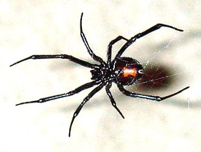
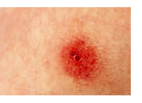
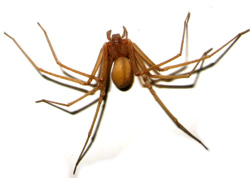
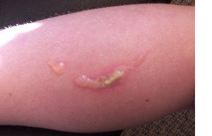
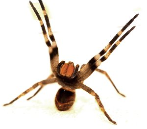

Picaduras y mordeduras
Que hacer en caso de picaduras de araña
La mayoría de estas lesiones son ocasionadas en forma accidental al pisar o al entrar en contacto con ellos.
Las arañas venenosas de Venezuela, al igual que las del resto de Suramérica, pueden dividirse en 4 grupos: Viudas, Reclusas, Tarántulas y un grupo Micelaneas (para el resto). De entrada la documentación que existe sobre ellas en nuestro país es muy poca.

Las llamadas “viudas negras” (género Latrodectus) son comunes en la costa venezolana, sobre todo en regiones xerófilas del Estado Falcón y del oriente del Páis.
Habitan en zonas poco transitadas de las casas y edificios, debajo de las rocas, cúmulos de desechos o cualquier lugar tranquilo y oscuro. El accidente es completamente impredecible, ya que la araña controla voluntariamente la inyección de veneno, y no siempre que dan una picadura lo inoculan.
Cuando ello ocurre, los sintomas son:

De las arañas “reclusas” (Loxoceles) se tiene poco conocimiento en Venezuela, sin embargo algunos estudiosos piensan que están ampliamente distribuidasa en el territorio nacional. Son arañas caseras, se ubican en áreas de retiro oscuras y tranquilas, tales como armarios, alacenas, debajo de las camas, etc; son poco agresivas y los accidentes ocurren generalmente al ponerse la ropa o ir a dormir.
Las lesiones tiene las siguientes características:

Dentro del grupo de miceláneos de arañas en Venezuela, quizás las más importantes son las “arañas de los camburales” (Phoneutria), de colores que van desde el crema hasta el marrón oscuro; son animales agresivos que pueden provocar heridas a la menor provocación.
Su picadura produce:
Atención inmediata en los casos antes descritos
1 Lava la herida cuidadosamente, con agua limpia.
2 Aplica frío sobre la zona afectada durante 15 minutos usando una bolsa de plástico, un pedazo de tela que contenga hielo. Esto ayuda a calmar el dolor y bajar la hinchazón.
3 Evita que la persona se desespere, mantenla calmada. Atiende el shock, si se presenta y traslada la víctima rápidamente a un centro asistencial.